Your Health is our priority
At Hospital Selaras, we are committed to providing you with the best care and products to help you feel your best.
.png)
About us
SELARAS Group is committed to improving the level of public health in Tangerang Regency by providing health service facilities, especially through the SELARAS Clinic and Pharmacy which are open 24 hours.


Higt Alert
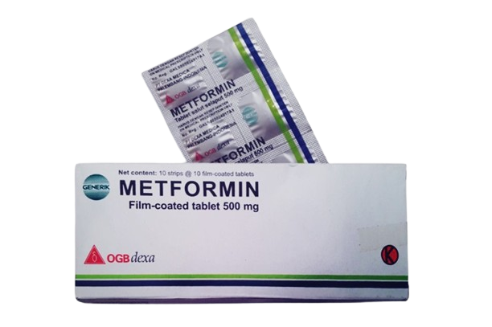
Metformin
Indikasi:memperbaiki kontrol gula darah pada pasien dengan diabetes mellitus tipe 2.
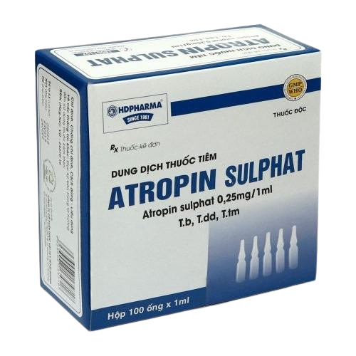
Atropine Sulphat
Indikasi:Sebagai antidotum dalam keracunan antikolinesterase antara lain oleh insektisida persenyawaan fosfor organik
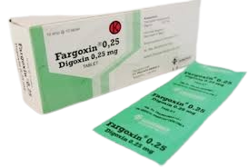
Fargoxin
Indikasi:Gagal jantung Kongestif Takikardia Supraventrikuler paroksimal
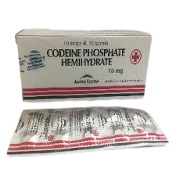
Codein
Indikasi:Untuk meredakan nyeri ringan hingga sedang dan untuk menangani batuk kering desertai nyeri
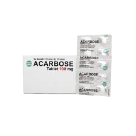
Acarbose
Indikasi:acarbose adalah sebagai obat antihiperglikemia oral pada pasien diabetes mellitus.
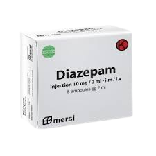
Diazepam
Indikasi:pemakaian jangka pendek pada ansietas derajat ringan hingga sedang, insomnia, status epileptikus, kejang demam, spasme otot, dan sebagai tambahan pada terapi putus alkohol akut.

Gliquidone
Indikasi:menurunkan kadar gula darah dengan merangsang pelepasan insulin dari sel beta pankreas yang masih berfungsi. Selain itu, obat ini juga dapat meningkatkan sensitivitas jaringan-jaringan perifer terhadap insulin.
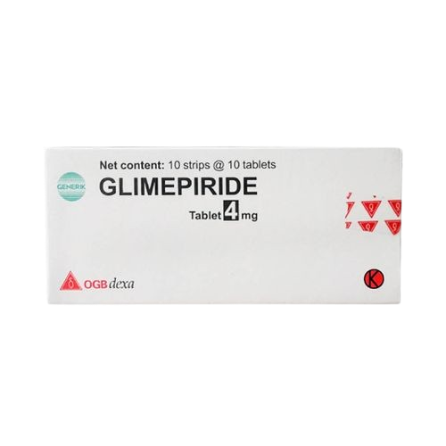
Glimeperide
Indikasi:obat anti diabetes mellitus tipe 2 atau Non-Insulin-Dependent (type II) Diabetes Melitus (NIDDM) dimana kadar glukosa darah tidak dapat hanya dikontrol dengan diet dan olahraga saja.
Injection
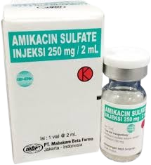
Amikacin
Indikasi: Pengobatan infeksi bakteri yang serius.
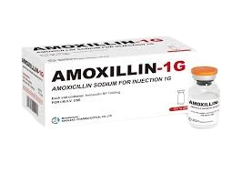
Amoxcillin
Indikasi:Pengobatan infeksi bakteri seperti infeksi saluran pernapasan, infeksi kulit, dan infeksi saluran kemih.
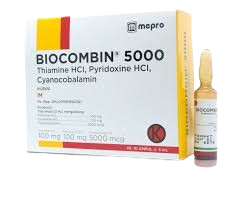
Biocombin
Indikasi:Pengobatan infeksi bakteri seperti infeksi saluran pernapasan, infeksi kulit, dan infeksi saluran kemih.
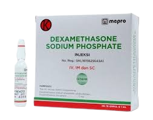
Dexamethason
Pengobatan radang, alergi, dan penyakit autoimun.
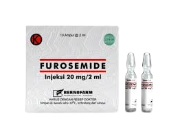
Furosemide
Indikasi:Pengobatan edema (pembengkakan) yang disebabkan oleh gagal jantung, penyakit hati, atau penyakit ginjal.
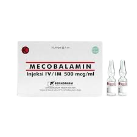
Mecobalamin
Indikasi:engobatan neuropati perifer dan anemia megaloblastik yang disebabkan oleh defisiensi vitamin B12.
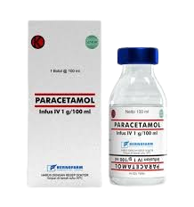
Paracetamol
Indikasi:Pengobatan demam dan nyeri ringan hingga sedang.
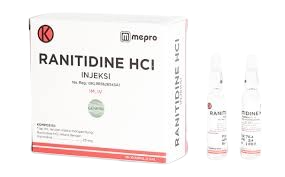
Ranitidine
Indikasi:Pengobatan tukak lambung dan tukak duodenum serta refluks gastroesofagus.
Patent
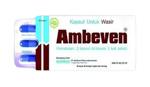
Ambeven
Indikasi: Mengobati wasir dan mengurangi gejala yang terkait.
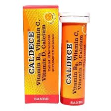
Caldece
Indikasi: Suplemen vitamin D dan kalsium untuk kesehatan tulang.
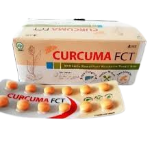
Curcuma FCT
Indikasi: Suplemen untuk meningkatkan nafsu makan dan kesehatan pencernaan.
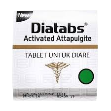
Diatabs
Indikasi: Mengobati diare akut dan kronis.
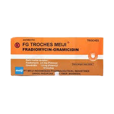
FG Troches
Indikasi: Mengobati radang tenggorokan dan infeksi mulut.
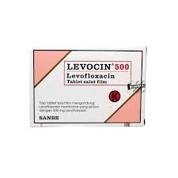
Levocin
Indikasi: Antibiotik untuk infeksi bakteri.
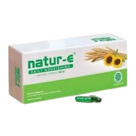
Nature-E
Indikasi: Suplemen vitamin E untuk kesehatan kulit.
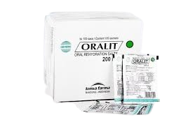
Oralit Diare
Indikasi: Mengatasi dehidrasi akibat diare.
Syrup
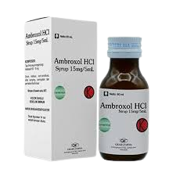
Ambroxol
Indikasi: Mengencerkan dahak dan meredakan batuk berdahak.
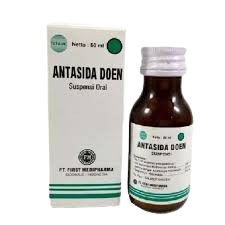
Antasida
Indikasi: Mengurangi asam lambung dan meredakan nyeri ulu hati.
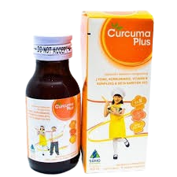
Curcuma Plus
Indikasi: Suplemen untuk meningkatkan nafsu makan dan kesehatan tubuh.
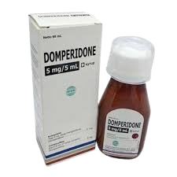
Domperidone
Indikasi: Meredakan mual dan muntah.
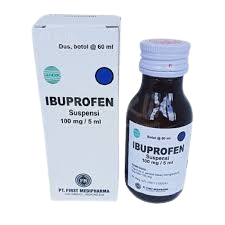
Ibuprofen Demam
Indikasi: Mengurangi demam dan nyeri.
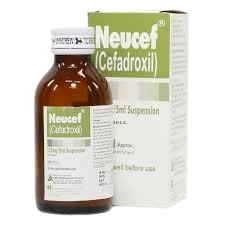
Neucef
Indikasi: Antibiotik untuk infeksi bakteri.
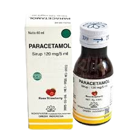
Paracetamol
Indikasi: Mengurangi demam dan nyeri.
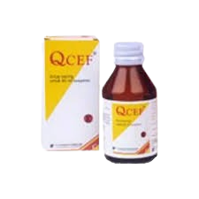
Qcef
Indikasi: Antibiotik untuk infeksi bakteri.
Generic
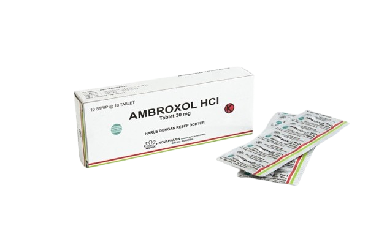
Ambroxol
Indikasi: Mengencerkan dahak dan meredakan batuk berdahak.
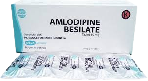
Amlodipin
Indikasi: Mengobati hipertensi dan angina.
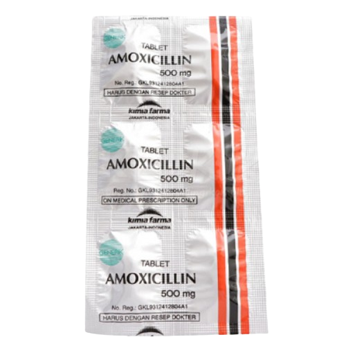
Amoxicillin
Indikasi: Antibiotik untuk infeksi bakteri.
Ctm Alergi
Indikasi: Mengobati alergi.
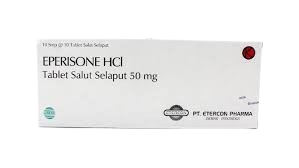
Eprisone
Indikasi: Meredakan nyeri dan kekakuan otot.
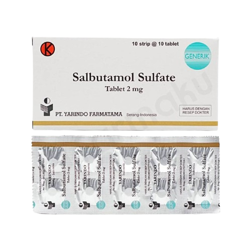
Salbutamol
Indikasi: Mengobati bronkospasme pada asma atau PPOK.
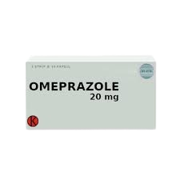
Omeprazole
Indikasi: Mengurangi asam lambung dan mengobati tukak lambung.
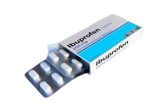
Ibuprofen
Indikasi: Mengurangi demam dan nyeri.